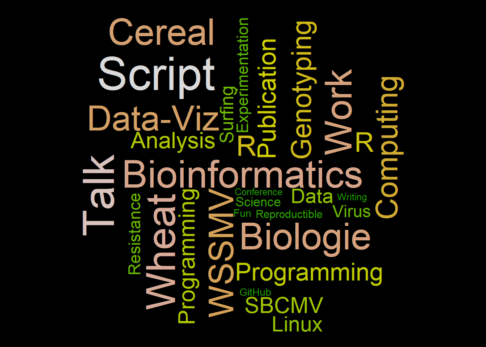

Show/Hide Code
library(wordcloud)
library(wordcloud2)在 R 中，有两个包可以用来创建词云： wordcloud 和 wordcloud2 。
library(wordcloud)
library(wordcloud2)由于 wordcloud2 生成的词云无法被 quarto正确渲染，因此需要使用 htmltools 包来处理。
library(htmltools)
library(knitr) # 需要 knitr 来获取代码块标签
embed_widget <- function(widget, height = "400px", width = "100%") {
# 步骤 1: 生成一个基于当前代码块标签的、独一无二的文件名
# 这样可以防止多个小部件相互覆盖文件
chunk_label <- opts_current$get('label')
filename <- paste0("./wordcloud/wc-", chunk_label, ".html")
# 步骤 2: 将小部件保存为一个独立的、自包含的HTML文件
library(htmlwidgets)
saveWidget(widget, filename, selfcontained = TRUE)
# 步骤 3: 创建并返回一个指向该文件的 iframe HTML 标签
tags$iframe(
src = filename,
height = height,
width = width,
style = "border:none;"
)
}在社交媒体上常用. 然而, Building a wordcloud is a pitfall on its own, except if it is done for aesthetic reasons:
Area is a poor metaphor of a numeric value, it is hardly perceive by the human eye
Longer words appear bigger by construction
wordcloud2wordcloud2 包是 R 中最好的词云包, 提供丰富的功能和更美观的输出。
head(demoFreq) |> knitr::kable(caption = "示例数据,两列, 第一列是word, 第二列是频率")| word | freq | |
|---|---|---|
| oil | oil | 85 |
| said | said | 73 |
| prices | prices | 48 |
| opec | opec | 42 |
| mln | mln | 31 |
| the | the | 26 |
p <- wordcloud2(data = demoFreq, size = 1.6) # 词云示例
embed_widget(p)词云示例
colorp <- wordcloud2(demoFreq, size=1.6, color='random-dark')
embed_widget(p)p <- wordcloud2(demoFreq, size=1.6, color=rep_len(c("green","blue"), nrow(demoFreq)))
embed_widget(p)p <- wordcloud2(demoFreq, size=1.6, color='random-light', backgroundColor="black")
embed_widget(p)shapeshape 参数来自定义词云的形状。可用的形状有：
p <- wordcloud2(demoFreq, size = 0.7, shape = 'star')
embed_widget(p)或者使用图片作为蒙版:
# 自己测试没有成功
wordcloud2(
demoFreq,
figPath = "~/Desktop/R-graph-gallery/img/other/peaceAndLove.jpg",
size = 1.5,
color = "skyblue",
backgroundColor = "black"
)使用三个参数旋转文字： minRotation , maxRotation 和 rotateRatio
p <- wordcloud2(
demoFreq,
size = 2.3,
minRotation = -pi / 6, # 最小旋转角度
maxRotation = -pi / 6, # 最大旋转角度
rotateRatio = 1 # 旋转比例
)
embed_widget(p)p <- wordcloud2(
demoFreqC,
size = 2,
# fontFamily = "Pingfang SC",
color = "random-light",
backgroundColor = "grey"
)
embed_widget(p)函数 letterCloud 允许使用字母或单词作为词云的遮罩
# 字母遮罩
letterCloud(
demoFreq,
word = "R",
color = 'random-light',
backgroundColor = "black"
)
# 单词遮罩
letterCloud(demoFreq, word = "PEACE", color = "white", backgroundColor = "pink")knitr::include_graphics("./image/wc-letter.png")
knitr::include_graphics("./image/wc-word.png")
字母和单词遮罩示例
# 安装 webshot 包（如未安装）
library(webshot)
# 安装 PhantomJS（仅需安装一次，用于网页截图）
webshot::install_phantomjs()
# 创建词云图对象
my_graph <- wordcloud2(demoFreq, size = 1.5)
# 保存为 HTML 文件（selfcontained = FALSE 表示资源分离存储）
library(htmlwidgets)
saveWidget(my_graph, "tmp.html", selfcontained = FALSE)
# 使用 webshot 将 HTML 文件导出为 PDF 文件
# delay 参数确保词云渲染完成，vwidth/vheight 设置输出尺寸
webshot("tmp.html", "fig_1.pdf", delay = 5, vwidth = 480, vheight = 480)wordcloudwordcloud 包提供了基本的词云功能，但在可定制性和美观性方面不如 wordcloud2 包。
# 构建词语向量
a <- c(
"Cereal",
"WSSMV",
"SBCMV",
"Experimentation",
"Talk",
"Conference",
"Writing",
"Publication",
"Analysis",
"Bioinformatics",
"Science",
"Statistics",
"Data",
"Programming",
"Wheat",
"Virus",
"Genotyping",
"Work",
"Fun",
"Surfing",
"R",
"R",
"Data-Viz",
"Python",
"Linux",
"Programming",
"Graph Gallery",
"Biologie",
"Resistance",
"Computing",
"Data-Science",
"Reproductible",
"GitHub",
"Script"
)
# 为每个词语随机分配一个频率（0~1之间，步长0.01）
b <- sample(seq(0, 1, 0.01), length(a), replace = TRUE)
# 设置图形背景为黑色
par(bg = "black")
wordcloud(
words = a, # 词语向量
freq = b, # 频率向量
col = terrain.colors(length(a), alpha = 0.9), # 颜色方案
rot.per = 0.3 # 旋转比例
)